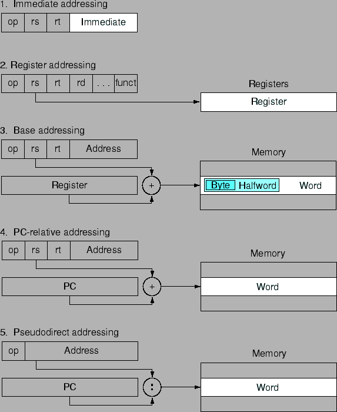

เราสามารถจัดการกับ byte จาก word ได้โดยคำสั่ง load byte (lb) และ store byte (sb)
lb $t0, 0($sp) # Read byte from source
sb $t0, 0{$sp) # Write byte to destination
หรือจัดการกับเลข 16 bit ด้วยคำสั่ง load halfword (lh) และ store halfword (sh)
lh $t0, 0($sp) # Read halfword from source
sh $t0, 0{$sp) # Write halfword to destination
คำสั่ง MIPS สามารถทำการโหลดค่า 16 bit ใน Constant หรือ Register ฟิลด์ ไปยัง 16 บิตแรกของรีจีสเตอร์ ด้วยคำสั่ง load upper immediate (lui)
วิธีการอ้างอิงข้อมูลของคอมพิวเตอร์ MIPS ทำได้หลายวิธี รูป 2.9 แสดงวิธีต่างๆ ในการเรียกใช้แอดเดรสเพื่ออ้างอิงข้อมูลจากคำสั่ง MIPS
|

|